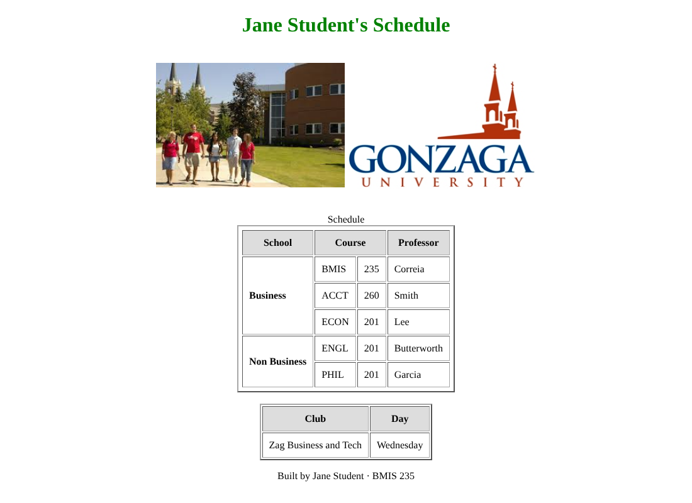

HTML-3
Tables
Use HTML tables to lay out two images and build your own class schedule.
Your starter files
They're already in your bmis235 repo, in the assignment3 folder. You copied them in Start here, so there's nothing to download.
Files: index.html, GUsob.jpg, GUlogo.jpg
Don't have a bmis235 repo yet? Do Start here first.
What to do
- Change the top heading to your name and make it green.1 pt
- Add the two images (
GUsob.jpgandGUlogo.jpg) where it saysimage 1 hereandimage 2 here, and center that table.2 pts - Show your full class schedule, grouped into Business and Non Business. Use
rowspanso each group label spans all of its classes.4 pts - Style the table header row so it stands out. Headers are bold by default, so add a background color (and anything else you like).2 pts
- Add a new table below the schedule with content of your choice.1 pt
Steps
- Research how HTML tables work:
<table>,<tr>,<th>,<td>. - Research
rowspanandcolspan. Notice how Course already spans two columns. - Draw your schedule on paper or in Excel first. Merge the cells so Business and Non Business line up with their classes.
- Open
assignment3/index.htmlwith the pencil and build it. Commit as you go. - Copy and paste the schedule table to start your new table, then change it.
Hints
- Right now
rowspan="1". If Business has 3 classes, what should it be? And how many rows need that first cell? - The schedule table is centered. Look at how it does it, then do the same for the image table.
- Image file names are case-sensitive:
GUsob.jpgis notgusob.jpg.
Make it yours
- Fill in the author comment at the top of every file with your name and GU username.
- Fill in
<meta name="author">with your name. - Fill in the footer: Built by YOUR NAME · BMIS 235.
- Make at least 3 commits with clear messages (not "Update index.html").
- Your real schedule, your professors, and a new table that's about you.
Finished example

When you're stuck
- Say it in one sentence: "I expected ___, but I see ___."
- Pick one problem. Ignore the rest for now.
- Find the line. Which tag or file is it in?
- Search your one sentence (W3Schools, Google, YouTube).
- Change one thing, commit, check. Didn't work? Undo it and try the next idea.
"Nothing works" can't be searched. "My image shows a broken icon" can.
Submit
- Wait 1–2 minutes after your last commit.
- Open your live link and check that everything works:
https://YOUR-GITHUB-USERNAME.github.io/bmis235/assignment3/ - Paste that link into Canvas.
Rubric
| Criteria | Pts |
|---|---|
| Green header | 1 |
| Centered images | 2 |
| Full schedule with row spans | 4 |
| Styled table header | 2 |
| New table with your own content | 1 |
| Total | 10 |